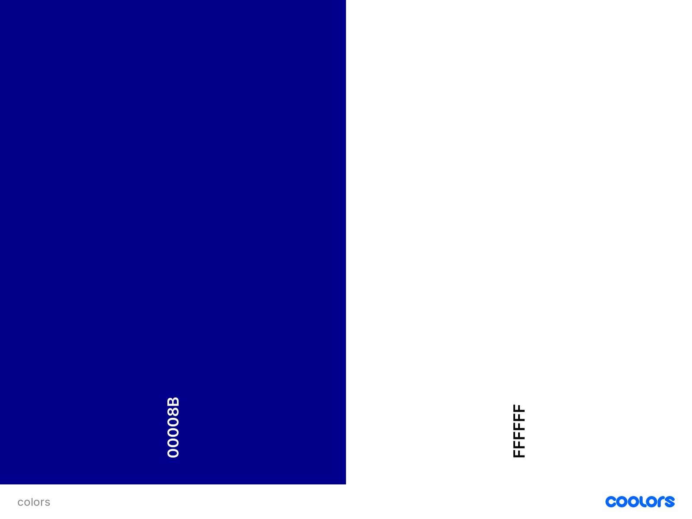
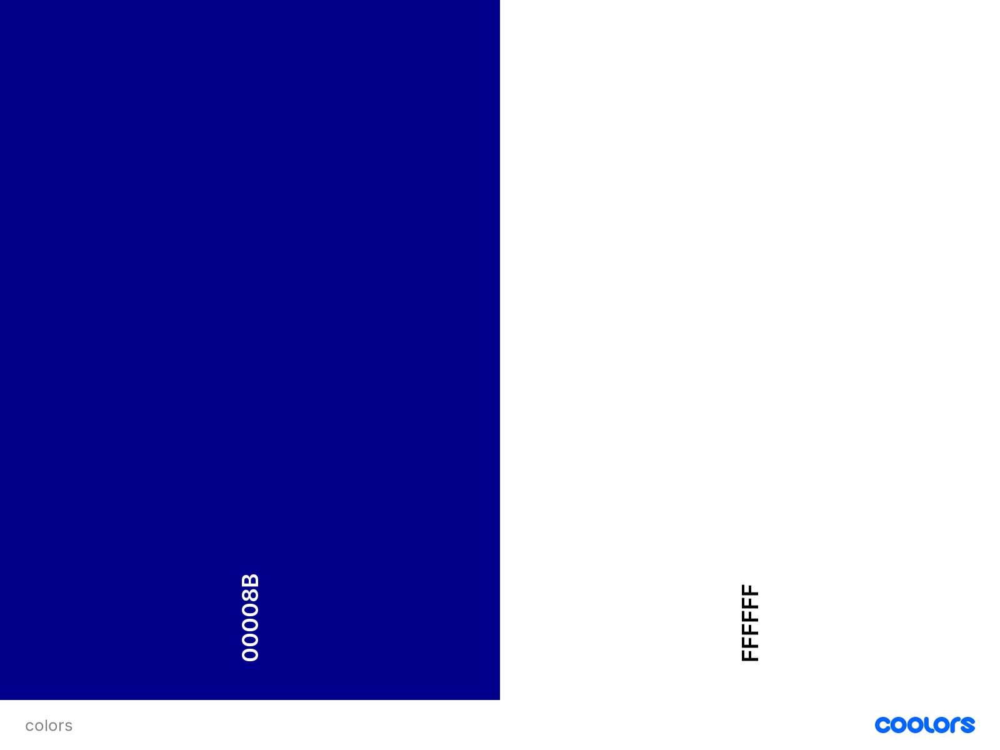
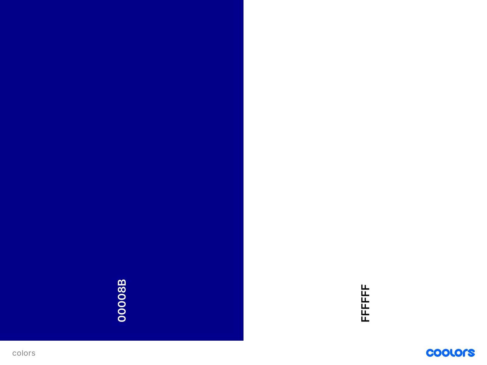

Color-Scheme
Home
Target Audience
Color Scheme
Typography
Color Scheme:
Used at the header / footer scheme & white background

 Color Scheme:
Used at the header / footer scheme & white background

Color Scheme:
Used at the header / footer scheme & white background
